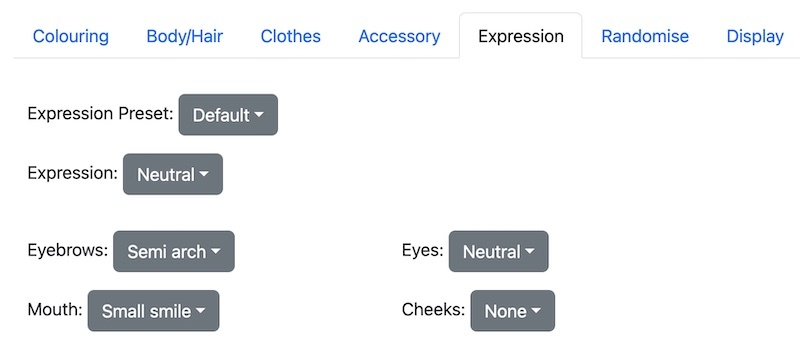

Guide to to the Spiral Atlas Spritemaker
Tags: posts, from dreamwidth, sprites, tutorial, art, spritemaker, my games,
This is a guide to using the Spiral Atlas Spritemaker. There is also a tutorial and example game.
Note that some details may change over time. Screenshots were taken in Firefox on a Mac.
Main page
The main page has three sections:
- Menu bar
- Sprite
- Settings tabs
There may also be some developer information text at the bottom if I forgot to disable it.
Menu Bar
- Dark Theme toggle: Choose between black text on a white background, or white text on a black background.
- Credits: Includes resources and information about usage rights.
- About: Learn more about this sprite maker!
- Export Choices: Creates a save file of your choices.
- Browse...: Loads an existing save file.
The save files are in json format, but can be read in any text editor, and contain some relatively human readable information at the start. If you hit a major bug, please send me the save file to help me figure out what went wrong.
Unfortunately, updates to the code often make old saves inaccurate or unusable. If the spritemaker isn't loading a save file correctly, you can open the save file in a text editor, then re-input your choices into the spritemaker.
Sprite
- Sprite mode drop-down: Choose between preview, head, expression, and outfit
- Export: Export the current sprite as a png
You can usually also save the sprite by right clicking, or hold-clicking on mobile. If it's not working, try using a different browser.
Sprite settings drop-down
- Preview: the full sprite as it will appear in your game.
- Head: The head, nose, and complexion, to go under the expression.
- Expression: The eyes, eyebrows, and mouth.
- Outfit: Everything else, to go over the expression.
If you are using the Spritemaker as a dollmaker, creating complete images to use as-is, you'll just use the preview mode.
If you are creating a visual novel sprite with multiple expressions then save the head, expressions, and outfit separately. In your game code, layer these images in the order head, expression, outfit.
If you would prefer your game to use separate mouths/eyes/eyebrows instead of combined expressions, cut the expression images into parts in an image editor.
Settings tabs
- Colouring: Set the hair, eye, and skin colour
- Body/Hair: Set head shape, hairstyle etc.
- Clothes: Choose clothing style and colour
- Accessory: Choose accessory style and colour
- Expression: Set expressions. Choose from various presets, or tweak mouth, eyes, and eyebrows individually.
- Randomise: Randomise choices, or pick from a preset.
- Display: Crop and resize sprite, or add effects.
Colouring
Choose the hair, eye, and skin colour by clicking on the little colour square and using the colour picker. The colour picker has multiple options such as RGB sliders and inbuilt html colours.
There are some example colours below the buttons, which you can use the colour picker on.
Body/Hair
Note that the colour of hair/skin etc is set in the "colouring" tab.
- Hairstyle: The main hairstyle
- Hair Back: Hair behind the head, such as ponytails, buns etc.
- Fringe: The fringe/bangs.
- Sidelocks: The little bits of hair on either side of the fringe/bangs.
- Facial Hair
- Head Shape: Note that this affects the position of the eyes, mouth, hair etc.
- Nose Shape
- Chest Shape: Whether the character has breasts/large pecs etc.
- Eye Shape: The overall eye shape, separate to the expression.
- Ears: Whether the ears are pointed, missing etc.
- Complexion: Freckles, wrinkles etc.
- Waist Cinch: If set to "hourglass", the waist part of the body and clothes is narrowed.
Clothes
- Clothing: The kind of clothing being edited, eg shoes.
- Style: The specific style
- Sleeves (coat, top, and overshirt): sets the sleeve type. Some specific styles ignore this setting, eg the bikini top never has sleeves.
- Waistline (bottom): Sets the waist of bottoms, eg if you want to add overalls to a pair of trousers, or want a skirt to have a belt.
- Main Colour: The base colour use on most of the piece of clothing.
- Highlight Colour: Where relevant, the colour of extra detailing. Not all clothes have a highlight colour.
- Pattern: The style of pattern, or none.
- Pattern Colour: What colour the pattern is, if chosen.
Below the buttons are some example five colour palettes. One way to create a harmonious colour scheme for your character is to pick the colours for the clothes and accessories from one of these palettes. You can also pick colours from an image on your desktop.
Accessory
This works similarly to the clothes tab.
- Clothing: The kind of clothing being edited, eg hat.
- Style: The specific style
- Main Colour: The base colour use on most of the piece of clothing.
- Highlight Colour: Where relevant, the colour of extra detailing. Not all clothes have a highlight colour.
- Pattern: The style of pattern, or none.
- Pattern Colour: What colour the pattern is, if chosen.
Expression
Each sprite has a number of expressions eg happy, sad etc. This is to make it easier to save a sprite with multiple expressions within a single save file. You can ignore the names and make other expressions if you want.
Note that the overall eye shape is set in body/hair.
- Expression Preset: A collection of expressions for a consistent character, eg the "understated" preset expressions are all muted. If you use this drop-down, all current expressions will be overwritten.
- Expression: The expression currently being edited. Note that changes will only affect the current expression.
- Eyebrows
- Eyes
- Mouth
- Cheeks: Blush or sweat-drop
Randomise
Note: "Randomised" expressions pick from one of the expression presets.
Randomise
- Randomise All: Randomise Body/Colouring/Clothes/Expression etc but not display settings. Affected by "customise" settings.
- Appearance Preset: Character presets. Will overwrite Body/Colouring/Clothes/Expression etc but not display settings.
Body/Colouring
- Colouring: Randomise the colour of skin, hair and eyes. Affected by "customise" settings.
- Features: Randomise Head Shape, Nose Shape, Chest Shape, Eye Shape, Complexion. Affected by "customise" settings.
Outfit
- Colours: Randomise the colour of all clothing and accessories, including patterns and highlight colours.
- Styles: Randomise the style of all clothing and accessories, and also the style of hair and facial hair. Affected by "customise" settings.
Customise
- Fantasy Body/Colouring: Include unnatural colours like green hair or purple eyes, as well as unusual body features like pointed ears. Does not include parts like tails or horns, which are classified as accessories.
- Fantasy/Historic Outfit: Include styles of clothing and accessory which would look out of place in a contemporary setting. Include parts like tails or horns, which are classified as accessories.
- Gender Presentation: Whether randomised choices should be masculine, feminine or androgynous. This affects eye shape, hair/facial hair, waist cinch, chest, and the styles of all clothing and accessories. It does not affect expression, head shape, nose shape, ears, complexion, or the colours of anything.
Display
- Scale: What scale to display the sprite at. Sprites at 100% are the most crisp.
- Crop (default 300): How many pixels to crop from the bottom of the sprite. If set to zero, the entire sprite is displayed.
- Effect: What effect to add to the sprite, such as making it a solid colour.
- Effect Colour: What colour to use on effects, eg what colour to use for "solid colour".